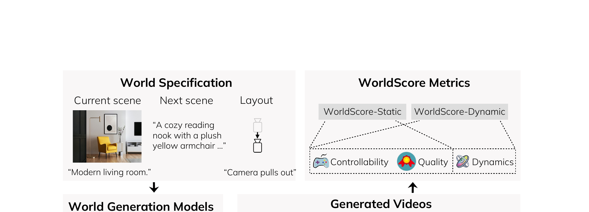

WorldScore: A Unified Evaluation Benchmark for World Generation
Duan、Yu、Chen、Li Fei-Fei、Wu · ICCV 2025 · arXiv:2504.00983 v2 · Zotero 5Y4CQZBL
WorldScore 把 world generation 视为连续 next-scene prediction，分别评 controllability、quality 与 dynamics；尤其把动力学拆成运动准确性、运动幅度和运动平滑性，避免“几乎不动”靠稳定画面拿高分。
§1 Introduction：世界生成为什么不能只是一段孤立视频
world generation 既包括 T2V/I2V，也包括 3D、4D 场景和可控相机，但现有 benchmark 往往只评一段短视频的画质。真正的“世界”需要跨 scene 延续布局与身份，支持长序列、相机控制、静态与动态内容，并在下一场景保持三维一致。
WorldScore 把任务分解为一连串 next-scene generation，使不同 3D/4D/video 方法最终都输出视频接受统一评测；指标聚合 controllability、quality 和 dynamics 三轴、共十个子指标。重点不是判定精确物理定律，而是统一衡量生成环境在多场景延续中的可控性、视觉稳定和动态合理性。
展开原文 · 核心定位
“first unified benchmark for world generation”
§2 Related Work：视频指标与 3D/4D benchmark 为什么难统一
视频 benchmark 擅长评帧质量、时序与提示词，3D benchmark 更关注几何和新视角，4D 方法还需同时处理运动。直接比较内部表示不现实，WorldScore 将它们渲染成视频，并用 next-scene protocol 注入多场景、长序列和相机控制。
相对 WorldModelBench 的物理违反和 WorldSimBench 的 embodied actionability，WorldScore 更偏宏观世界生成：布局、风格、相机、动态和跨场景一致性。它适合评价 4DGS/Real-to-Sim 世界资产，也不能直接说明机器人策略能否在其中学习。
§3 生成一张图不是生成世界
§4 Benchmark 结构

1. 给定 world specification
明确当前场景与要求的下一变化。
输入是什么：评测或任务明确写出的起始场景、控制条件和目标要求。它规定模型从哪里开始、允许接收哪些信息、最后应该发生什么。
这一步究竟做什么：本步骤执行“给定 world specification”。具体来说，明确当前场景与要求的下一变化。 这里处理的只是整条链路中的一个接口：把上一步的结果整理成下一步能够正确读取和继续计算的形式。
输出到哪里：一套固定且可复现的输入条件，后续所有模型都必须在这套条件下生成或行动。这个结果会交给下一步“生成世界 rollout”继续处理。
为什么不能省略：它把未经处理的原始问题变成后续模块可以计算的输入，是整条链路的起点。
2. 生成世界 rollout
保持评测协议一致。
输入是什么：来自上一步“给定 world specification”的产物：一套固定且可复现的输入条件，后续所有模型都必须在这套条件下生成或行动。本步骤还会按论文设置读取当前条件、时间步或训练信号。
这一步究竟做什么：本步骤执行“生成世界 rollout”。具体来说，保持评测协议一致。 模型从相同起点产生候选未来，后续模块再检查这些未来是否符合条件、物理规律或动作需要。
输出到哪里：一个或多个候选未来、动作或轨迹，以及必要的中间状态。这个结果会交给下一步“测 controllability/quality”继续处理。
为什么不能省略：学习算法只能从它见过的经历中改进；这一步决定训练数据是否覆盖成功、失败和恢复状态。
3. 测 controllability/quality
控制正确与画质分开。
输入是什么：来自上一步“生成世界 rollout”的产物：一个或多个候选未来、动作或轨迹，以及必要的中间状态。本步骤还会按论文设置读取当前条件、时间步或训练信号。
这一步究竟做什么：本步骤执行“测 controllability/quality”。具体来说，控制正确与画质分开。 它把原本模糊的‘看起来对不对’拆成可重复计算或人工核对的判断，从而让不同模型能在同一标准下比较。
输出到哪里：一组诊断数值、分类结果或评测分数；它告诉后续模块当前结果哪里好、哪里需要修正。这个结果会交给下一步“测 motion dynamics”继续处理。
为什么不能省略：没有统一诊断或评分，后续模块无法知道哪里出错，也无法公平比较两个模型是否真的进步。
4. 测 motion dynamics
避免静态复制得到虚假高分。
输入是什么：来自上一步“测 controllability/quality”的产物：一组诊断数值、分类结果或评测分数；它告诉后续模块当前结果哪里好、哪里需要修正。本步骤还会按论文设置读取当前条件、时间步或训练信号。
这一步究竟做什么：本步骤执行“测 motion dynamics”。具体来说，避免静态复制得到虚假高分。 它把原本模糊的‘看起来对不对’拆成可重复计算或人工核对的判断，从而让不同模型能在同一标准下比较。
输出到哪里：一组诊断数值、分类结果或评测分数；它告诉后续模块当前结果哪里好、哪里需要修正。这是图中这条链路的最终产物，随后会进入真实执行、模型更新或指标评测。
为什么不能省略：没有统一诊断或评分，后续模块无法知道哪里出错，也无法公平比较两个模型是否真的进步。
§5 Dynamics 三分法
| Motion accuracy | 运动方向/轨迹是否对齐目标。 |
| Motion magnitude | 以相邻帧光流估计是否移动足够。 |
| Motion smoothness | 与插值参考比较，惩罚抖动和突变。 |
§6 对 WAM 的价值
它比 FVD 更接近“动作控制世界”：可控性和运动维度能发现静态、方向错与抖动。但仍需把自然条件显式替换为机器人 action，并和执行成功/IDM 一致性联测。
§7 局限
光流适合可见运动，却不等于接触力或隐藏状态；参考轨迹也可能不是唯一正确未来。WorldScore 是多轴 dashboard，不宜压成单一 SOTA 数字。
§8 使用与复现：统一 benchmark 仍需保留方法差异
最小可信使用清单
- 固定 world specification、相机轨迹、渲染参数和输出时长。
- 报告三轴及十个子指标，不只报 WorldScore 总分。
- 按静态/动态、单/多场景、短/长序列分桶。
- 公开 3D/4D 方法转视频的适配步骤和失败样本。
- Real-to-Sim 研究另加几何、碰撞与策略迁移验证。
WorldScore 统一的是“生成世界的可观察表现”，不是所有方法的内部物理；对 4DGS 很有用，但离可交互 simulator 仍差一层。